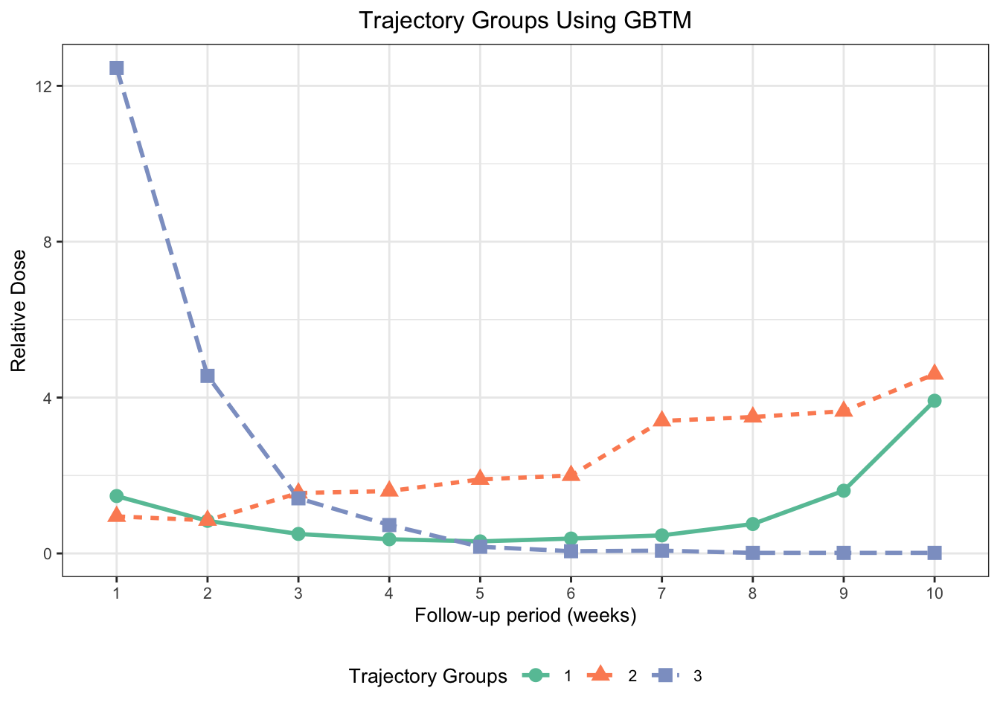

library("flexmix")
library("magrittr")
library("gt")
library("ggplot2")Supplementary Materials for 2024 ISPOR Workshop: Assessing Medication Adherence with Group-Based Trajectory ModellingGroup-Based Trajectory Models
1 Document Overview
This document has been prepared by Core Clinical Sciences.
This includes detailed code examples has been prepared as our supplementary materials for our workshop titled “Assessing Medication Adherence with Group-Based Trajectory Modelling” for ISPOR US Annual Meeting 2024 in Atlanta, GA.
Group-based trajectory modelling (GBTM) is a specialized finite mixture modelling that uses trajectory groups to approximate unknown trajectories. The term trajectory is used to describe progression of any outcomes over time. Here in this document, we simulate longitudinal data, fit various GBTM with different polynomial functions of time via flexmix package, and assess the model fit using Bayesian Information Criterion (BIC). The code within this materials is intended to assist participants in applying relatively simple cases of GBTM.
2 Data Simulation for GBTM
We have loaded the flexmix package required to run GBTM, magrittr package to pipe objects forward into a function or call expression, and gt package to display the model outputs in a nicely formatted table.
For this illustration, we have generated longitudinal data based on a blog post by Andrew P Wheeler.
2.1 Simulations
Here, we are setting the seed and generating longitudinal data for three different types of Poisson models.
set.seed(10)
n <- 200 # Number of individuals
t <- 10 # Number of time periods
Data <- expand.grid(t=1:t,
SUBJID=1:n)
# Setting up underlying 3 models
time <- Data$t
poissonModel1 <- 3.5 - time
poissonModel2 <- 1.3 + (-1 * time) + (0.1 * time^2)
poissonModel3 <- 0.15 * time
models <- data.frame(poissonModel1, poissonModel2, poissonModel3)Here, we are selecting one of these underlying Poisson models at random with different underlying probabilities (i.e., 0.35, 0.50, and 0.15) that we specify.
# Simulation of data with different underlying probabilities
latent <- sample(1:3,
n,
replace = TRUE,
1 prob = c(0.35, 0.5, 0.15))
Data$trueModel <- expand.grid(t=1:t, trueModel=latent)$trueModel
Data$modelValue <- models[cbind(1:(n*t), Data$trueModel)]
Data$RelativeDoses <- rpois(n=n*t,
2 lambda=exp(Data$modelValue))
colnames(Data) <- c("WEEK",
"SUBJID",
"trueModel",
"modelValue",
3 "RelativeDoses")
DataTrajectory <- Data[c("SUBJID", "RelativeDoses", "WEEK")]- 1
- We are randomly selecting one of the 3 underlying Poisson models with specified probabilities.
- 2
-
We are generating an outcome of interest, relative dose consumed (
RelativeDoses) over the 10 time periods based on model values - 3
- We are renaming the variables and processing the data with variables from the data set required to run the models
3 GBTM Analyses
Now that we have the processed data ready for analyses, we can run GBTM analyses here.
# Initialize empty results data set
summary_table <- data.frame(Model = character(),
1 BIC = numeric())
# Running GBTM with 3 trajectories
k <- 3
# Loop over different polynomial functions
2 for (degree in c("Linear", "Quadratic", "Cubic")) {
# Define the formula based on the degree
formula <- switch(degree,
"Linear" = RelativeDoses ~ I(WEEK),
"Quadratic" = RelativeDoses ~ I(WEEK) + I(WEEK^2),
3 "Cubic" = RelativeDoses ~ I(WEEK) + I(WEEK^2) + I(WEEK^3))
# Fit the model
model <- flexmix(formula ~ . | SUBJID, k = k,
model = FLXMRglm(formula, family = "poisson"),
4 data = DataTrajectory)
# Calculate metrics
5 bic <- BIC(model)
# Add to summary table
summary_table <- rbind(summary_table, data.frame(Model = paste(degree, k),
6 BIC = bic))
}- 1
- Initializing an empty data set
- 2
- Running GBTM with 3 different trajectories
- 3
- Defining models with linear, quadratic, and cubic polynomial functions
- 4
- Fitting the GBTM model
- 5
- Calculating the BIC for each fitted GBTM model
- 6
- Combining this into a data frame
4 Assessment of the Model Fit
We have employed the Bayesian Information Criterion (BIC) as the main metric to assess the fit of our GBTM models. The BIC is particularly useful for comparing models with different numbers of parameters, as it balances model complexity against goodness of fit. Specifically, BIC penalizes models with a higher number of parameters to prevent over-fitting, thus promoting model parsimony.
This criterion is calculated based on the likelihood of the data given the model and the number of parameters used, with a heavier penalty applied as the sample size increases. A lower BIC value indicates a better model fit, suggesting that the model is more effective at describing the observed data with fewer parameters. Therefore, when comparing multiple models, the one with the lowest BIC is generally preferred, as it offers the optimal balance between simplicity and the ability to accurately represent the complexity of the data.
summary_table <- data.frame(summary_table)
# Ranking models
summary_table$BIC_Rank <- rank(summary_table$BIC, na.last = TRUE)
# Sort by BIC rank
summary_table <- summary_table[order(summary_table$BIC_Rank),]
# Table Format
formatted_summary_table <- gt(summary_table) %>%
tab_header(
title = "Assessment of GBTM Model Fit Based on BIC",
) %>%
cols_label(
Model = "Model",
BIC = "BIC",
BIC_Rank = "BIC Ranking"
) %>%
cols_align(
align = "center",
columns = everything()
)
# Print formatted table
formatted_summary_table| Assessment of GBTM Model Fit Based on BIC | ||
| Model | BIC | BIC Ranking |
|---|---|---|
| Quadratic 3 | 4961.165 | 1 |
| Cubic 3 | 4981.495 | 2 |
| Linear 3 | 5503.445 | 3 |
5 Comparison of GBTM Groups with True Groups
GBTMmodel<- flexmix(.~ .|SUBJID,
k = 3,
model = FLXMRglm(RelativeDoses ~ WEEK + I(WEEK^2),family="poisson"),
data = DataTrajectory,
control = list(nrep = 10))
#Comparing to true groups:
Data$Mix <- GBTMmodel@cluster
compare_table <- table(Data$trueModel, Data$Mix)/t
#Creating a data frame of results
compare_df <- matrix(data = NA, nrow = 3, ncol = 3)
compare_df[1,] <- compare_table[1,]
compare_df[2,] <- compare_table[2,]
compare_df[3,] <- compare_table[3,]
compare_df <- as.data.frame(compare_df)
#Setting names
colnames(compare_df) <- c("True Group 1", "True Group 2", "True Group 3")
Group <- c("GBTM Group 1", "GBTM Group 2", "GBTM Group 3")
compare_df <- cbind(Group, compare_df)
gt_compare <- gt(compare_df) %>%
tab_header(
title = "Comparison of True Groups and GBTM Groups",
)
gt_compare| Comparison of True Groups and GBTM Groups | |||
| Group | True Group 1 | True Group 2 | True Group 3 |
|---|---|---|---|
| GBTM Group 1 | 0 | 70 | 0 |
| GBTM Group 2 | 1 | 0 | 107 |
| GBTM Group 3 | 19 | 0 | 3 |
6 Trajectory Visualization
modelResults<-data.frame(posterior(GBTMmodel)) #Posterior probabilities
modelResults$class<-GBTMmodel@cluster #Recover the groups of each individual
modelResults$SUBJID <- GBTMmodel@group #Recover the SUBJID
modelResults <- modelResults[!duplicated(modelResults$SUBJID),] #Delete duplicate rows
DataTGroups<-merge(DataTrajectory ,modelResults,by="SUBJID") #Create the database with the classes, IDs, and membership probabilities
DataTGroups$Groups <- ifelse(DataTGroups$class == 3, 1,ifelse(
DataTGroups$class == 1, 2,3))
MeanGroupTime <- aggregate(RelativeDoses ~ Groups + WEEK, data = DataTGroups,FUN=mean)
colnames(MeanGroupTime)<-c("Groups","time","MeanDose")
MeanGroupTime$Groups <- factor(MeanGroupTime$Groups)
MeanGroupTime$time <- factor(MeanGroupTime$time)
# Plot - GBTM Mean Dose
p <- ggplot(data = MeanGroupTime, aes(x = time, y = MeanDose, group = Groups)) +
geom_line(aes(color = Groups, linetype = Groups), size = 1) + # Line for each group with color
geom_point(aes(color = Groups, shape = Groups), size = 3) + # Points for each observation with color
scale_color_brewer(palette = "Set2") + # Use a nicer color palette for colors
labs(
title = "Trajectory Groups Using GBTM",
x = "Follow-up period (weeks)",
y = "Relative Dose",
color = "Trajectory Groups", # Label for color legend
linetype = "Trajectory Groups",
shape = "Trajectory Groups"
) +
theme_bw() + # Use a clean theme
theme(
plot.title = element_text(hjust = 0.5), # Center the plot title
text = element_text(size = 10), # Adjust text size
legend.position = "bottom" # Adjust legend position
)
print(p)